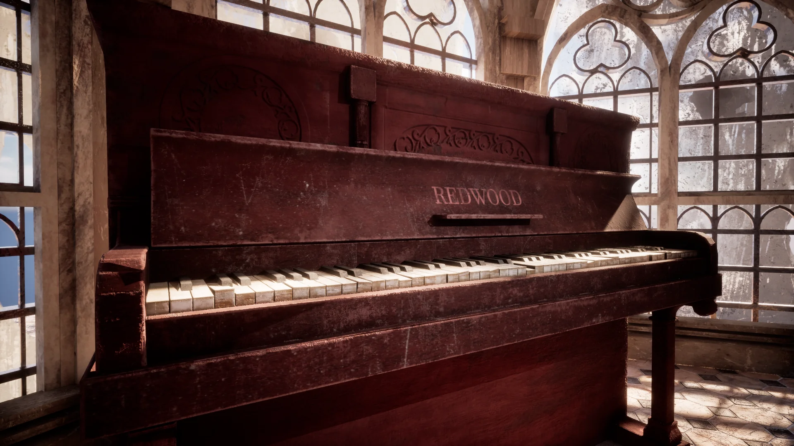
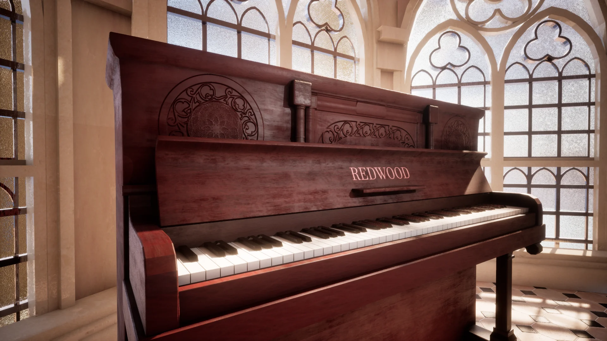
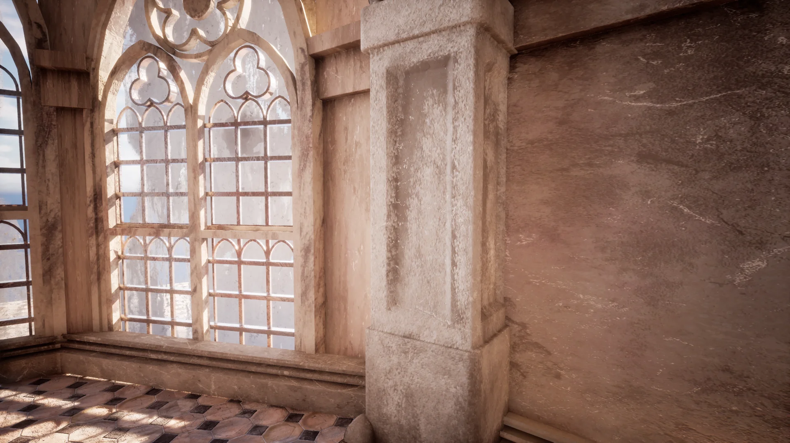
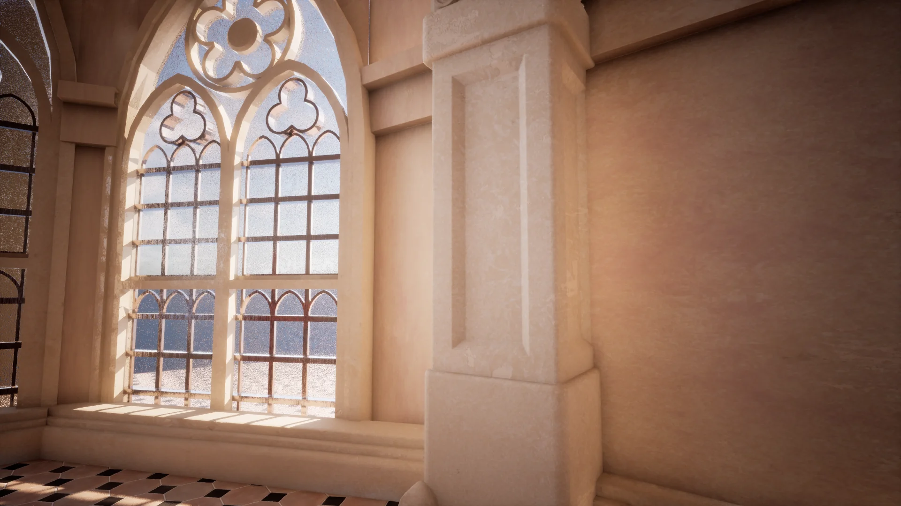
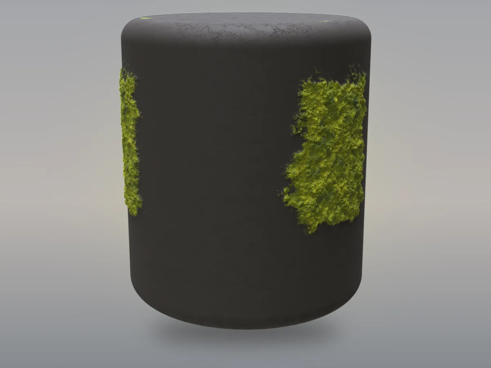
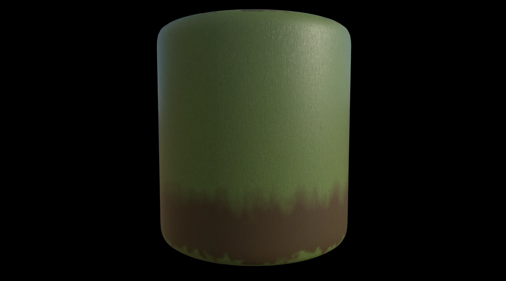
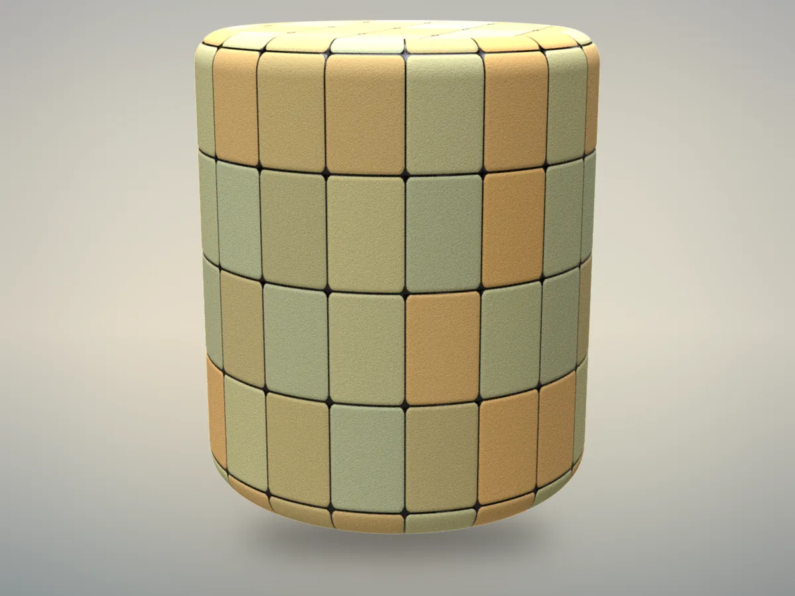
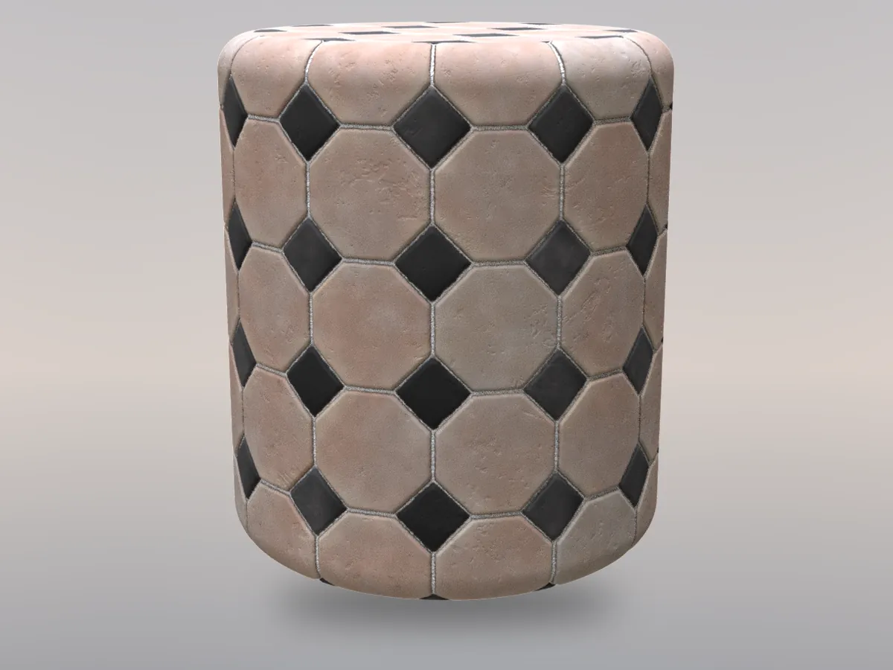
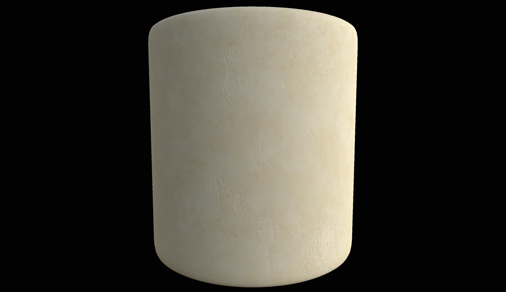

← Unreal


 NewOld
NewOld
 NewOld
NewOld
 NewOld
NewOld


Substance Designer → Substance Painter → Unreal Engine
Substance Designer → Substance Painter → Unreal Engine
钢琴场景的材质：先在 Substance Designer 程序化制作，主要道具再到 Substance Painter 手绘细节，最后在 Unreal Engine 组合成完整场景。
12种材质
12张节点图
3个软体
1个完整场景
New vs Old
拖动中间的线，比较 Unreal 里全新干净的版本和做旧的材质。


NewOld

NewOldNewOldNewOldNewOld有机材质
植物和自然表面：仙人掌、苔藓、叶子、藤蔓、南瓜和花瓣。
参数动起来
每个开放的参数从范围的一端拉到另一端，一格一格渲染出来。
自己试试看
选一个材质、选一个参数，然后拖动滑杆。每个位置都是用那个数值真实渲染出来的。
仙人掌色相
Drag the slider
新鲜度
Drag the slider

苔藓不透明度
Drag the slider
纹路数量
Drag the slider
颜色渐层
Drag the slider
花瓣色相
Drag the slider
最终效果

节点图
非有机材质
钢琴和周围的空间：烤漆木头、琴键、铜、玻璃、混凝土和地砖。
参数动起来
每个开放的参数从范围的一端拉到另一端，一格一格渲染出来。
自己试试看
选一个材质、选一个参数，然后拖动滑杆。每个位置都是用那个数值真实渲染出来的。
雕花大小
Drag the slider
琴键色调
Drag the slider
金属色相
Drag the slider

窗格数量
Drag the slider
污渍
Drag the slider

地砖数量
Drag the slider
最终效果

节点图